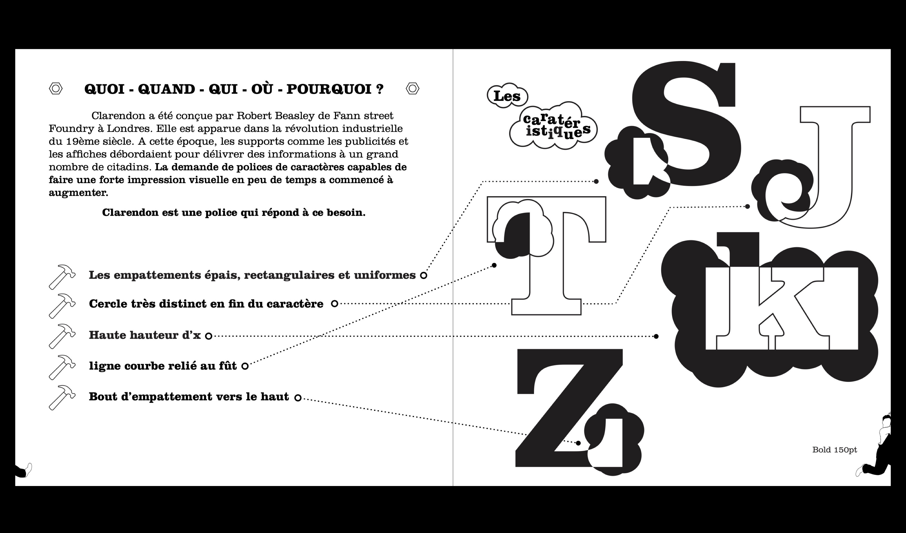
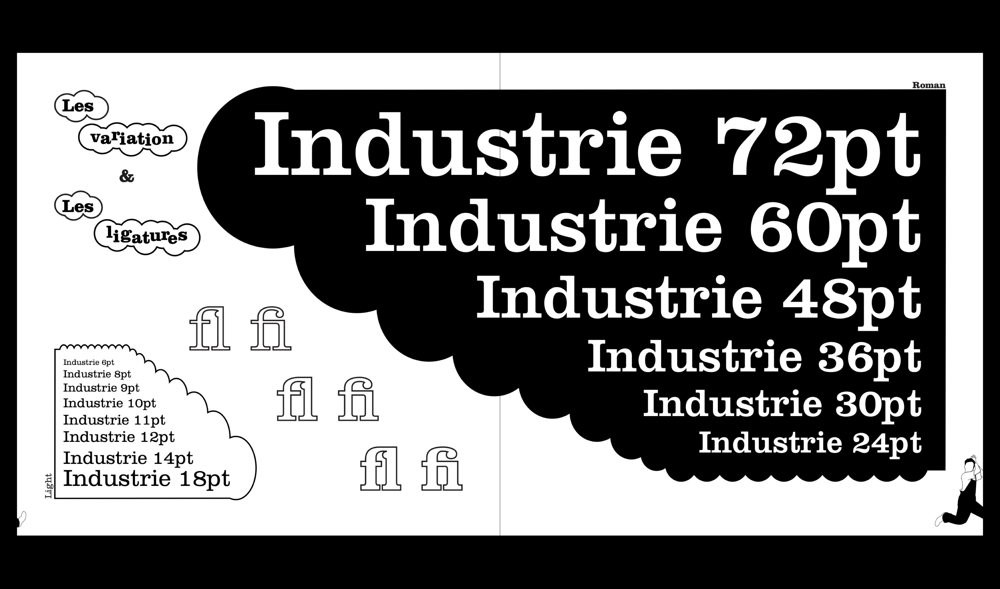
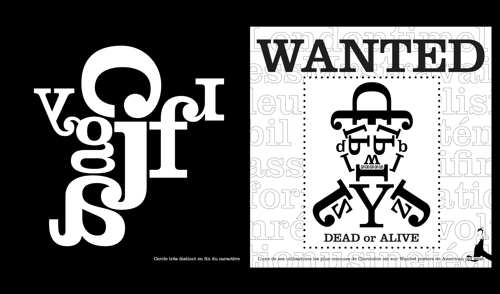
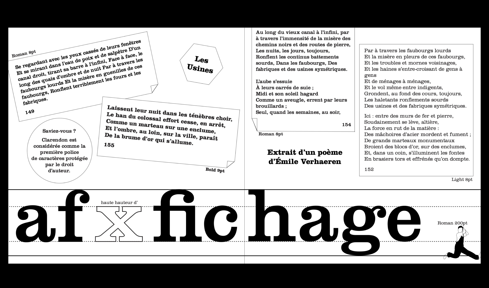
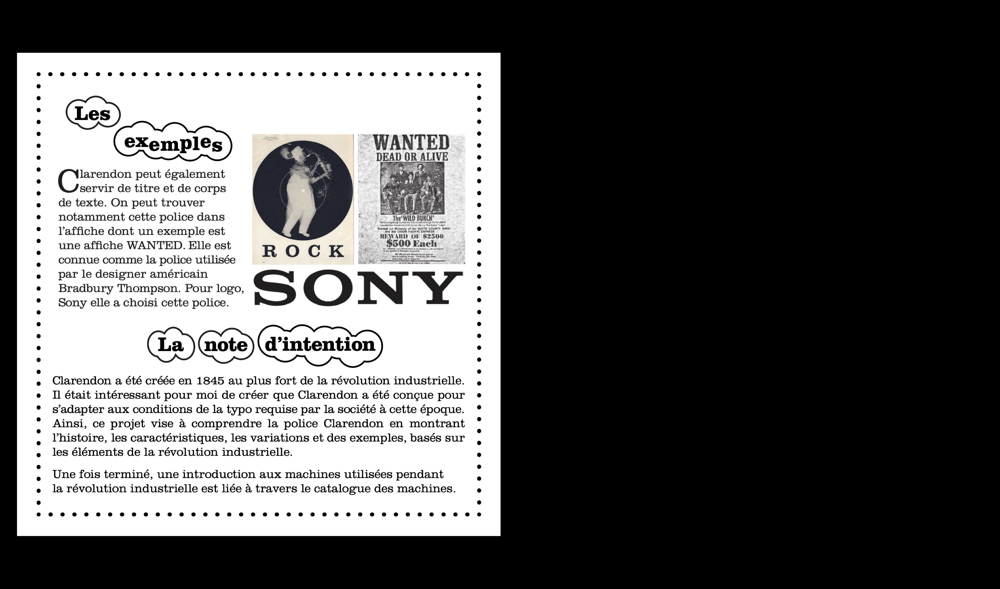
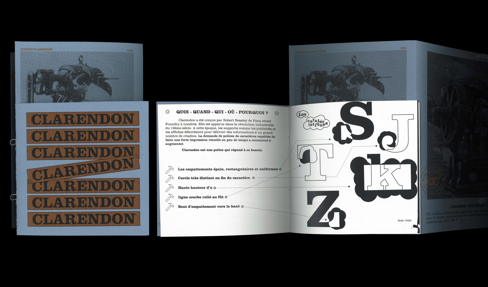
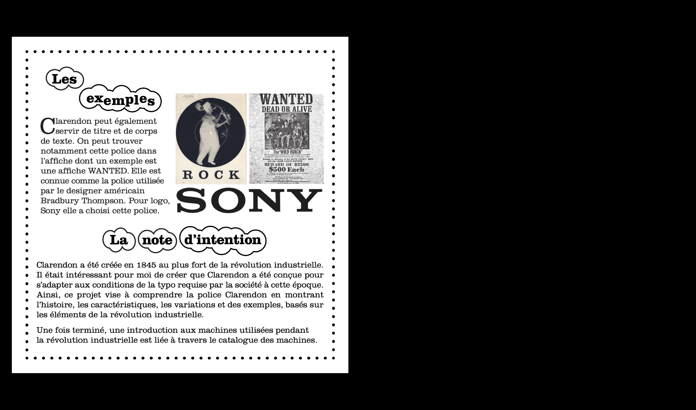
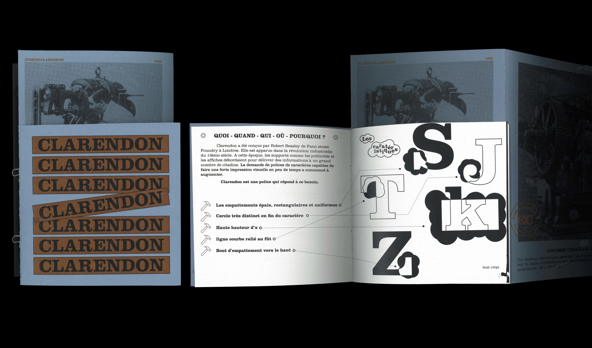
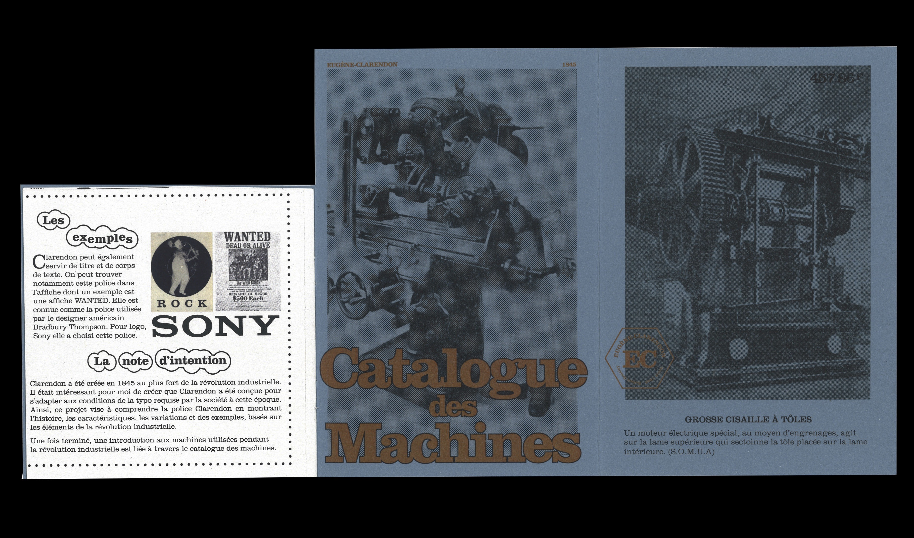
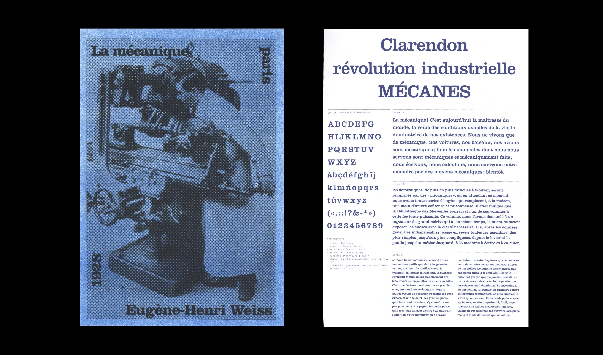

@dpohyootoon_
Spécimen : Clarendon
Edition, Affiche en riso
2022
Spécimen typographique pour la police Clarendon. On peut trouver des illustrations de travailleurs et d’outils rappelant la révolution industrielle, l’époque à laquelle cette police a été créée. Une fois terminé, une introduction aux machines utilisées pendant la révolution industrielle est liée à travers le catalogue des machines.






 




